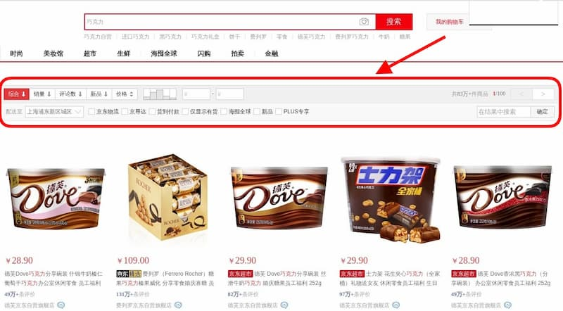
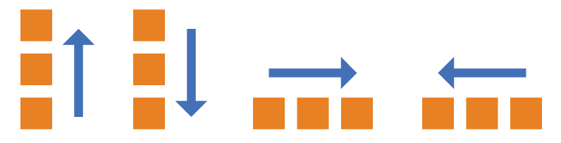
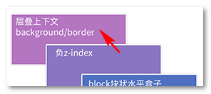

关注微信号【路飞】，干货马上就来！

前言
给大家整理了一下每个 case 一些还算不错的文章吧（还包括一些躺在我收藏夹里的好文章），大家可以自己看文章总结一下答案，这样也会理解更深刻。
并不是所有文章都需要看，希望是一个抛砖引玉的作用，大家也可以锻炼一下自己寻找有效资料的能力 ~
( 文章排序不分前后，随机排序 ~)
1.1 position
CSS 有两个最重要的基本属性，前端开发必须掌握：display 和 position。
display属性指定网页的布局。两个重要的布局，我已经介绍过了：弹性布局flex和网格布局grid。
本文介绍非常有用的position属性。我希望通过10分钟的阅读，帮助大家轻松掌握网页定位，说清楚浏览器如何计算网页元素的位置，尤其是新引进的sticky定位。
一、position 属性的作用
position属性用来指定一个元素在网页上的位置，一共有5种定位方式，即position属性主要有五个值。
- static
- relative
- fixed
- absolute
- sticky
下面就依次介绍这五个值。最后一个sticky是2017年浏览器才支持的，本文将重点介绍。
二、static 属性值
static是position属性的默认值。如果省略position属性，浏览器就认为该元素是static定位。
这时，浏览器会按照源码的顺序，决定每个元素的位置，这称为”正常的页面流”（normal flow）。每个块级元素占据自己的区块（block），元素与元素之间不产生重叠，这个位置就是元素的默认位置。
注意，static定位所导致的元素位置，是浏览器自主决定的，所以这时top、bottom、left、right这四个属性无效。
三、relative，absolute，fixed
relative、absolute、fixed这三个属性值有一个共同点，都是相对于某个基点的定位，不同之处仅仅在于基点不同。所以，只要理解了它们的基点是什么，就很容易掌握这三个属性值。
这三种定位都不会对其他元素的位置产生影响，因此元素之间可能产生重叠。
3.1 relative 属性值
relative表示，相对于默认位置（即static时的位置）进行偏移，即定位基点是元素的默认位置。

它必须搭配top、bottom、left、right这四个属性一起使用，用来指定偏移的方向和距离。
div {
position: relative;
top: 20px;
}3.2 absolute 属性值
absolute表示，相对于上级元素（一般是父元素）进行偏移，即定位基点是父元素。
它有一个重要的限制条件：定位基点（一般是父元素）不能是static定位，否则定位基点就会变成整个网页的根元素html。另外，absolute定位也必须搭配top、bottom、left、right这四个属性一起使用。
/*
HTML 代码如下
<div id="father">
<div id="son"></div>
</div>
*/
#father {
positon: relative;
}
#son {
position: absolute;
top: 20px;
}上面代码中，父元素是relative定位，子元素是absolute定位，所以子元素的定位基点是父元素，相对于父元素的顶部向下偏移20px。如果父元素是static定位，上例的子元素就是距离网页的顶部向下偏移20px。
注意，absolute定位的元素会被”正常页面流”忽略，即在”正常页面流”中，该元素所占空间为零，周边元素不受影响。
3.3 fixed 属性值
fixed表示，相对于视口（viewport，浏览器窗口）进行偏移，即定位基点是浏览器窗口。这会导致元素的位置不随页面滚动而变化，好像固定在网页上一样。
它如果搭配top、bottom、left、right这四个属性一起使用，表示元素的初始位置是基于视口计算的，否则初始位置就是元素的默认位置。
div {
position: fixed;
top: 0;
}上面代码中，div元素始终在视口顶部，不随网页滚动而变化。
四、sticky 属性值
sticky跟前面四个属性值都不一样，它会产生动态效果，很像relative和fixed的结合：一些时候是relative定位（定位基点是自身默认位置），另一些时候自动变成fixed定位（定位基点是视口）。
因此，它能够形成”动态固定”的效果。比如，网页的搜索工具栏，初始加载时在自己的默认位置（relative定位）。

页面向下滚动时，工具栏变成固定位置，始终停留在页面头部（fixed定位）。
等到页面重新向上滚动回到原位，工具栏也会回到默认位置。
sticky生效的前提是，必须搭配top、bottom、left、right这四个属性一起使用，不能省略，否则等同于relative定位，不产生”动态固定”的效果。原因是这四个属性用来定义”偏移距离”，浏览器把它当作sticky的生效门槛。
它的具体规则是，当页面滚动，父元素开始脱离视口时（即部分不可见），只要与sticky元素的距离达到生效门槛，relative定位自动切换为fixed定位；等到父元素完全脱离视口时（即完全不可见），fixed定位自动切换回relative定位。
请看下面的示例代码。（注意，除了已被淘汰的 IE 以外，其他浏览器目前都支持sticky。但是，Safari 浏览器需要加上浏览器前缀-webkit-。）
#toolbar {
position: -webkit-sticky; /* safari 浏览器 */
position: sticky; /* 其他浏览器 */
top: 20px;
}上面代码中，页面向下滚动时，#toolbar的父元素开始脱离视口，一旦视口的顶部与#toolbar的距离小于20px（门槛值），#toolbar就自动变为fixed定位，保持与视口顶部20px的距离。页面继续向下滚动，父元素彻底离开视口（即整个父元素完全不可见），#toolbar恢复成relative定位。
五、 sticky 的应用
sticky定位可以实现一些很有用的效果。除了上面提到”动态固定”效果，这里再介绍两个。
5.1 堆叠效果
堆叠效果（stacking）指的是页面滚动时，下方的元素覆盖上方的元素。下面是一个图片堆叠的例子，下方的图片会随着页面滚动，覆盖上方的图片（查看 demo）。
它的原理是页面向下滚动时，每张图片都会变成fixed定位，导致后一张图片重叠在前一张图片上面。详细解释可以看这里。
5.2 表格的表头锁定
大型表格滚动的时候，表头始终固定，也可以用sticky实现（查看 demo）。
需要注意的是，sticky必须设在
1.2 行内元素/块状元素
1.行内元素
不会自动换行
设置宽高无效
设置margin上下方向无效，左右方向有效
设置padding上下左右方向都有效
常用的元素有：span 、a、b、br、u、ur等等
2.块状元素
自动换行
可以识别宽高
设置margin和padding的上下左右均有效
多个块状元素标签写在一起，默认排列方式为从上至下
3.行内块状元素
不会自动换行
可以识别宽高
默认排列方式为从左到右
常用的元素有：img、input、td等
1.3 flex
网页布局（layout）是 CSS 的一个重点应用。
布局的传统解决方案，基于盒状模型，依赖 display 属性 + position属性 + float属性。它对于那些特殊布局非常不方便，比如，垂直居中就不容易实现。
2009年，W3C 提出了一种新的方案—-Flex 布局，可以简便、完整、响应式地实现各种页面布局。目前，它已经得到了所有浏览器的支持，这意味着，现在就能很安全地使用这项功能。
介绍下flex布局
Flex 是 Flexible Box 的缩写，意为”弹性布局”，用来为盒状模型提供最大的灵活性。
任何一个容器都可以指定为 Flex 布局。
.box{
display: flex;
}
//行内元素也可以使用 Flex 布局。
.box{
display: inline-flex;
}
//Webkit 内核的浏览器，必须加上-webkit前缀。
.box{
display: -webkit-flex; /* Safari */
display: flex;
}
注意，设为 Flex 布局以后，子元素的float、clear和vertical-align属性将失效。二、基本概念
采用 Flex 布局的元素，称为 Flex 容器（flex container），简称”容器”。它的所有子元素自动成为容器成员，称为 Flex 项目（flex item），简称”项目”。
容器默认存在两根轴：水平的主轴（main axis）和垂直的交叉轴（cross axis）。主轴的开始位置（与边框的交叉点）叫做main start，结束位置叫做main end；交叉轴的开始位置叫做cross start，结束位置叫做cross end。
项目默认沿主轴排列。单个项目占据的主轴空间叫做main size，占据的交叉轴空间叫做cross size。
三、容器的属性
以下6个属性设置在容器上。
- flex-direction
- flex-wrap
- flex-flow
- justify-content
- align-items
- align-content
3.1 flex-direction属性
flex-direction属性决定主轴的方向（即项目的排列方向）。
.box {
flex-direction: row | row-reverse | column | column-reverse;
}
它可能有4个值。
- row（默认值）：主轴为水平方向，起点在左端。
- row-reverse：主轴为水平方向，起点在右端。
- column：主轴为垂直方向，起点在上沿。
- column-reverse：主轴为垂直方向，起点在下沿。
3.2 flex-wrap属性
默认情况下，项目都排在一条线（又称”轴线”）上。flex-wrap属性定义，如果一条轴线排不下，如何换行。
它可能取三个值。
（1）nowrap（默认）：不换行。
（2）wrap：换行，第一行在上方。
（3）wrap-reverse：换行，第一行在下方。
3.3 flex-flow
flex-flow属性是flex-direction属性和flex-wrap属性的简写形式，默认值为row nowrap。
.box {
flex-flow: <flex-direction> || <flex-wrap>;
}3.4 justify-content属性
justify-content属性定义了项目在主轴上的对齐方式。
.box {
justify-content: flex-start | flex-end | center | space-between | space-around;
}
它可能取5个值，具体对齐方式与轴的方向有关。下面假设主轴为从左到右。
- flex-start（默认值）：左对齐
- flex-end：右对齐
- center： 居中
- space-between：两端对齐，项目之间的间隔都相等。
- space-around：每个项目两侧的间隔相等。所以，项目之间的间隔比项目与边框的间隔大一倍。
3.5 align-items属性
align-items属性定义项目在交叉轴上如何对齐。
.box {
align-items: flex-start | flex-end | center | baseline | stretch;
}
它可能取5个值。具体的对齐方式与交叉轴的方向有关，下面假设交叉轴从上到下。
- flex-start：交叉轴的起点对齐。
- flex-end：交叉轴的终点对齐。
- center：交叉轴的中点对齐。
- baseline: 项目的第一行文字的基线对齐。
- stretch（默认值）：如果项目未设置高度或设为auto，将占满整个容器的高度。
3.6 align-content属性
align-content属性定义了多根轴线的对齐方式。如果项目只有一根轴线，该属性不起作用。
.box {
align-content: flex-start | flex-end | center | space-between | space-around | stretch;
}
该属性可能取6个值。
- flex-start：与交叉轴的起点对齐。
- flex-end：与交叉轴的终点对齐。
- center：与交叉轴的中点对齐。
- space-between：与交叉轴两端对齐，轴线之间的间隔平均分布。
- space-around：每根轴线两侧的间隔都相等。所以，轴线之间的间隔比轴线与边框的间隔大一倍。
- stretch（默认值）：轴线占满整个交叉轴。
四、项目的属性
以下6个属性设置在项目上。
- order
- flex-grow
- flex-shrink
- flex-basis
- flex
- align-self
4.1 order属性
order属性定义项目的排列顺序。数值越小，排列越靠前，默认为0。
.item {
order: <integer>;
}
4.2 flex-grow属性
flex-grow属性定义项目的放大比例，默认为0，即如果存在剩余空间，也不放大。
.item {
flex-grow: <number>; /* default 0 */
}
如果所有项目的flex-grow属性都为1，则它们将等分剩余空间（如果有的话）。如果一个项目的flex-grow属性为2，其他项目都为1，则前者占据的剩余空间将比其他项多一倍。
4.3 flex-shrink属性
flex-shrink属性定义了项目的缩小比例，默认为1，即如果空间不足，该项目将缩小。
.item {
flex-shrink: <number>; /* default 1 */
}
如果所有项目的flex-shrink属性都为1，当空间不足时，都将等比例缩小。如果一个项目的flex-shrink属性为0，其他项目都为1，则空间不足时，前者不缩小。
负值对该属性无效。
4.4 flex-basis属性
flex-basis属性定义了在分配多余空间之前，项目占据的主轴空间（main size）。浏览器根据这个属性，计算主轴是否有多余空间。它的默认值为auto，即项目的本来大小。
.item {
flex-basis: <length> | auto; /* default auto */
}它可以设为跟width或height属性一样的值（比如350px），则项目将占据固定空间。
4.5 flex属性
flex属性是flex-grow, flex-shrink 和 flex-basis的简写，默认值为0 1 auto。后两个属性可选。
.item {
flex: none | [ <'flex-grow'> <'flex-shrink'>? || <'flex-basis'> ]
}该属性有两个快捷值：auto (1 1 auto) 和 none (0 0 auto)。
建议优先使用这个属性，而不是单独写三个分离的属性，因为浏览器会推算相关值。
4.6 align-self属性
align-self属性允许单个项目有与其他项目不一样的对齐方式，可覆盖align-items属性。默认值为auto，表示继承父元素的align-items属性，如果没有父元素，则等同于stretch。
.item {
align-self: auto | flex-start | flex-end | center | baseline | stretch;
}
该属性可能取6个值，除了auto，其他都与align-items属性完全一致。
grid也一起看一下
1.4 1px
移动端1px问题是怎么解决的
一、产生原因
那么为什么会产生这个问题呢？主要是跟一个东西有关，DPR(devicePixelRatio) 设备像素比，它是默认缩放为100%的情况下，设备像素和CSS像素的比值。
window.devicePixelRatio=物理像素 /CSS像素
二、解决方案这里只细说最常用的两种方案
1、WWDC对iOS统给出的方案
2、使用边框图片
3、使用box-shadow实现
4、使用伪元素
1 条border
.setOnePx{
position: relative;
&::after{
position: absolute;
content: '';
background-color: #e5e5e5;
display: block;
width: 100%;
height: 1px; /*no*/
transform: scale(1, 0.5);
top: 0;
left: 0;
}
}复制代码可以看到，将伪元素设置绝对定位，并且和父元素的左上角对齐，将width 设置100%，height设置为1px，然后进行在Y方向缩小0.5倍。
4 条border
.setBorderAll{
position: relative;
&:after{
content:" ";
position:absolute;
top: 0;
left: 0;
width: 200%;
height: 200%;
transform: scale(0.5);
transform-origin: left top;
box-sizing: border-box;
border: 1px solid #E5E5E5;
border-radius: 4px;
}
}复制代码同样为伪元素设置绝对定位，并且和父元素左上角对其。将伪元素的长和宽先放大2倍，然后再设置一个边框，以左上角为中心，缩放到原来的0.5倍
总结：
优点：全机型兼容，实现了真正的1px，而且可以圆角。
缺点：暂用了after 伪元素，可能影响清除浮动。
5、设置viewport的scale值
这个解决方案是利用viewport+rem+js 实现的
<html>
<head>
<title>1px question</title>
<meta http-equiv="Content-Type" content="text/html;charset=UTF-8">
<meta name="viewport" id="WebViewport" content="initial-scale=1, maximum-scale=1, minimum-scale=1, user-scalable=no">
<style>
html {
font-size: 1px;
}
* {
padding: 0;
margin: 0;
}
.top_b {
border-bottom: 1px solid #E5E5E5;
}
.a,.b {
box-sizing: border-box;
margin-top: 1rem;
padding: 1rem;
font-size: 1.4rem;
}
.a {
width: 100%;
}
.b {
background: #f5f5f5;
width: 100%;
}
</style>
<script>
var viewport = document.querySelector("meta[name=viewport]");
//下面是根据设备像素设置viewport
if (window.devicePixelRatio == 1) {
viewport.setAttribute('content', 'width=device-width,initial-scale=1, maximum-scale=1, minimum-scale=1, user-scalable=no');
}
if (window.devicePixelRatio == 2) {
viewport.setAttribute('content', 'width=device-width,initial-scale=0.5, maximum-scale=0.5, minimum-scale=0.5, user-scalable=no');
}
if (window.devicePixelRatio == 3) {
viewport.setAttribute('content', 'width=device-width,initial-scale=0.3333333333333333, maximum-scale=0.3333333333333333, minimum-scale=0.3333333333333333, user-scalable=no');
}
var docEl = document.documentElement;
var fontsize = 32* (docEl.clientWidth / 750) + 'px';
docEl.style.fontSize = fontsize;
</script>
</head>
<body>
<div class="top_b a">下面的底边宽度是虚拟1像素的</div>
<div class="b">上面的边框宽度是虚拟1像素的</div>
</body>
</html>总结
优点：全机型兼容，直接写1px不能再方便
缺点：适用于新的项目，老项目可能改动大
介绍下rem方案和vw方案,分别有什么优缺点
一、简单介绍下rem布局方案
rem是css中的长度单位，1rem=根元素html的font-size值。
当页面中所有元素都使用rem单位时，你只需要改变根元素font-size值，所有元素就会按比例放大或者缩小。
因此我们只需要写一小段js代码，根据屏幕宽度改变html的font-size值，就可以做到弹性布局。
这种方法确实便捷，兼容性也很好，是目前非常主流的弹性布局方案。
但这种方案有弊端
- 弊端之一：和根元素font-size值强耦合，系统字体放大或缩小时，会导致布局错乱；
- 弊端之二：html文件头部需插入一段js代码
本文将介绍一种更优秀纯粹的方案。
二、vw单位实现弹性布局
我们先来看看这vw vh单位 w3c的官方解释
- vw：1% of viewport’s width
- vh：1% of viewport’s height
viewport即浏览器可视区域大小
我们可以这样理解
- 100vw = window.innerwidth
- 100vh = window.innerheight
在移动端我们一般都可以认为，100vw就是屏幕宽度。若使用vw布局，就不需要再像rem那样，在js中去动态设置根元素的font-size了，sass中只需要使用这个函数做转换即可
//以iphone7尺寸@2x 750像素宽的视觉稿为例
@function vw($px) {
@return ($px / 750) * 100vw;
}
//假设一个div元素在视觉稿中，宽度为120px，字体大小为12px
div {
width: vw(120);
font-size: vw(12);
} vw单位和百分比%单位对比
那么100vw和我们平时用的width:100%有什么区别呢？
百分比%是根据父元素宽度或者高度进行计算
而vw vh固定按照viewport来计算，不会受父元素宽高度影响。
100vw包括了页面滚动条宽度（页面滚动条属于viewport范围内，100vw当然包括了页面滚动条宽度）。但把body或者html设置为width:100%时，是不包括页面滚动条的宽度的。也就是说100vw在有纵向滚动条的情况下，会比100%宽。
那么就会引发一个问题：
pc端使用vw单位时，如果页面内容超出一屏长度，出现了纵向滚动条，同时有元素width:100vw， 则会导致出现条横向滚动条，因为元素（100vw + 滚动条宽度）超出了viewport宽度。（移动端滚动条不占位，所以不会有这个问题）不过pc端一般不需要弹性布局，还是尽量使用width:100%更保险。
为何rem布局比vw主流？兼容性
既然rem布局有弊端，与font-size强耦合会引发副作用，vw布局相较之下更纯粹代码逻辑也更清晰，为何移动端rem布局比vw主流？
我们来看看vw和rem的兼容性。
相较之下，vw单位兼容性比rem稍差，ios8、安卓4.4及以上才完全支持。这也是为什么之前rem布局一直更流行的原因。
总结
目前ios8、安卓4.4以下的用户已经非常少了，caniuse上面显示，在中国这部分用户只有1.2%，比例已经非常低了，而这部分用户的手机估计只会打打电话不会使用互联网的（还是需根据各自产品的用户数据分析来决定是否使用vw）。如果你的页面只适用于微信、qq，那绝对能放心使用vw单位，还可以配合vh针对一些特殊比例屏幕做处理，彻底摆脱使用rem带来的副作用，删掉html头部计算font-size的那段js代码，让你的代码更纯粹。
1.5 重绘回流
介绍一下重绘和回流
在讨论回流与重绘之前，我们要知道：
1.浏览器使用流式布局模型 (Flow Based Layout)。
2.浏览器会把HTML解析成DOM，把CSS解析成CSSOM，DOM和CSSOM合并就产生了Render Tree。
3.有了RenderTree，我们就知道了所有节点的样式，然后计算他们在页面上的大小和位置，最后把节点绘制到页面上。
4.由于浏览器使用流式布局，对Render Tree的计算通常只需要遍历一次就可以完成，但table及其内部元素除外，他们可能需要多次计算，通常要花3倍于同等元素的时间，这也是为什么要避免使用table布局的原因之一。
一句话：回流必将引起重绘，重绘不一定会引起回流。
回流 (Reflow)
当Render Tree中部分或全部元素的尺寸、结构、或某些属性发生改变时，浏览器重新渲染部分或全部文档的过程称为回流。
会导致回流的操作：
页面首次渲染
浏览器窗口大小发生改变
元素尺寸或位置发生改变
元素内容变化（文字数量或图片大小等等）
元素字体大小变化
添加或者删除可见的DOM元素
激活CSS伪类（例如：:hover）
查询某些属性或调用某些方法
一些常用且会导致回流的属性和方法：
clientWidth、clientHeight、clientTop、clientLeft
offsetWidth、offsetHeight、offsetTop、offsetLeft
scrollWidth、scrollHeight、scrollTop、scrollLeft
scrollIntoView()、scrollIntoViewIfNeeded()
getComputedStyle()
getBoundingClientRect()
scrollTo()
重绘 (Repaint)
当页面中元素样式的改变并不影响它在文档流中的位置时（例如：color、background-color、visibility等），浏览器会将新样式赋予给元素并重新绘制它，这个过程称为重绘。
性能影响
回流比重绘的代价要更高。
有时即使仅仅回流一个单一的元素，它的父元素以及任何跟随它的元素也会产生回流。
现代浏览器会对频繁的回流或重绘操作进行优化：
浏览器会维护一个队列，把所有引起回流和重绘的操作放入队列中，如果队列中的任务数量或者时间间隔达到一个阈值的，浏览器就会将队列清空，进行一次批处理，这样可以把多次回流和重绘变成一次。
当你访问以下属性或方法时，浏览器会立刻清空队列：
clientWidth、clientHeight、clientTop、clientLeft
offsetWidth、offsetHeight、offsetTop、offsetLeft
scrollWidth、scrollHeight、scrollTop、scrollLeft
width、height
getComputedStyle()
getBoundingClientRect()
因为队列中可能会有影响到这些属性或方法返回值的操作，即使你希望获取的信息与队列中操作引发的改变无关，浏览器也会强行清空队列，确保你拿到的值是最精确的。
如何避免重绘和回流
CSS
避免使用table布局。
尽可能在DOM树的最末端改变class。
避免设置多层内联样式。
将动画效果应用到position属性为absolute或fixed的元素上。
避免使用CSS表达式（例如：calc()）。
JavaScript
避免频繁操作样式，最好一次性重写style属性，或者将样式列表定义为class并一次性更改class属性。
避免频繁操作DOM，创建一个documentFragment，在它上面应用所有DOM操作，最后再把它添加到文档中。
也可以先为元素设置display: none，操作结束后再把它显示出来。因为在display属性为none的元素上进行的DOM操作不会引发回流和重绘。
避免频繁读取会引发回流/重绘的属性，如果确实需要多次使用，就用一个变量缓存起来。
对具有复杂动画的元素使用绝对定位，使它脱离文档流，否则会引起父元素及后续元素频繁回流。
1.6 居中/常见布局
两列自适应布局
两列自适应布局是指一列由内容撑开，另一列撑满剩余宽度的布局方式
1.float+overflow:hidden
<style>
.contain {
overflow: hidden;
zoom: 1;
}
.left {
float: left;
background: blue;
}
.right {
overflow: hidden;
zoom: 1;
background: yellow;
}
</style>
<div class="contain">
<div class="left">左栏</div>
<div class="right">右栏</div>
</div>2.flex布局
<style>
.contain {
display: flex;
}
.right {
flex: 1;
}
</style>
<div class="contain">
<div class="left">左栏</div>
<div class="right">右栏</div>
</div>3.grid布局
<style>
.contain {
display: grid;
grid-template-columns: auto 1fr;
}
</style>
<div class="contain">
<div class="left">左栏</div>
<div class="right">右栏</div>
</div>三栏布局——两边固定宽度中间自适应
1.float布局
float布局使用时注意清除浮动。
<style>
/*父元素清除浮动*/
.float:after {
content: "";
height: 0;
display: block;
clear: both;
visibility: hidden;
}
.float {
*zoom: 1;
}
.float .left {
float: left;
width: 300px;
height: 300px;
background: red;
}
.float .right {
float: right;
width: 300px;
height: 300px;
background: blue;
}
.float .center {
background: yellow;
height: 400px;
margin-left: 300px;
margin-right: 300px;
}
</style>
<section class="float">
<div class="left">左边</div>
<div class="right">右边</div>
<div class="center">中间</div>
</section>2.Position 布局
Position布局只是根据定位属性去直接设置元素位置。不推荐使用
<style>
.position {
position: relative;
}
.position .left {
position: absolute;
left: 0;
width: 300px;
height: 300px;
background: red;
}
.position .center {
position: absolute;
left: 300px;
right: 300px;
height: 400px;
background: yellow;
}
.position .right {
position: absolute;
right: 0;
width: 300px;
height: 300px;
background: blue;
}
</style>
<section class="position">
<div class="left">左边</div>
<div class="center">中间</div>
<div class="right">右边</div>
</section>3.Flex 布局
flex布局比较强大,只能支持到IE10及以上。
<style>
.flex {
display: flex;
}
.flex .left {
width: 300px;
background: red;
}
.flex .center {
flex: 1;
background: yellow;
}
.flex .right {
width: 300px;
background: blue;
}
</style>
<section class="flex">
<div class="left">左边</div>
<div class="center">中间</div>
<div class="right">右边</div>
</section>4.table 布局
table布局使用起来方便,没有兼容性也不存在问题，但使用不方便
<style>
.table {
width: 100%;
display: table;
}
.table .left {
display: table-cell;
width: 300px;
background: red;
}
.table .center {
display: table-cell;
background: yellow;
}
.table .right {
display: table-cell;
width: 300px;
background: blue;
}
</style>
<section class="table">
<div class="left">左边</div>
<div class="center">中间</div>
<div class="right">右边</div>
</section>5.grid布局
grid布局很强大，但是兼容性很差。
<style>
.grid {
display: grid;
grid-template-rows: 100px;
grid-template-columns: 300px auto 300px;
}
.grid .left {
background: red;
}
.grid .center {
background: yellow;
}
.grid .right {
background: blue;
}
</style>
<section class="grid">
<div class="left">左边</div>
<div class="right">右边</div>
<div class="center">中间</div>
</section>圣杯布局
三个部分都设定为左浮动，然后设置center的宽度为100%，此时，left和right部分会跳到下一行；
通过设置margin-left为负值让left和right部分回到与center部分同一行；
<head>
<meta charset="UTF-8">
<title>Title</title>
<style>
.main {
padding-left: 300px;
padding-right: 300px;
}
.center {
float: left;
width: 100%;
height: 400px;
background: #4ba946;
}
.left {
float: left;
width: 300px;
height: 300px;
background: #0376c2;
margin-left: -100%;
position: relative;
left: -300px;
}
.right {
float: left;
width: 300px;
height: 300px;
background: #9889c1;
margin-left: -300px;
position: relative;
right: -300px;
}
</style>
</head>
<body>
<section class="main">
<div class="center">中间</div>
<div class="left">左边</div>
<div class="right">右边</div>
</section>
</body>缺点:
center部分的最小宽度不能小于left部分的宽度，否则会left部分掉到下一行
如果其中一列内容高度拉长(如下图)，其他两列的背景并不会自动填充。(借助伪等高布局可解决)
双飞翼布局
实现步骤(前两步与圣杯布局一样)
三个部分都设定为左浮动，然后设置center的宽度为100%，此时，left和right部分会跳到下一行；
通过设置margin-left为负值让left和right部分回到与center部分同一行；
center部分增加一个内层div，并设margin: 0 200px；
缺点
多加一层 dom 树节点，增加渲染树生成的计算量。
多列等高布局——圣杯布局
实现步骤：
1.三部分都设定为浮动，设置center的宽度为100%。
2.设置 left 和 right的margin-left为负值让left和right部分回到与center部分同一行。
3.设置相对定位，让left和right部分移动到两边。
4.伪等高布局
.container {
overflow: hidden;//把溢出背景切掉
}
.center,.left,.right {
padding-bottom: 10000px;
margin-bottom: -10000px;
}示例：
<style>
.container {
padding-left: 300px;
padding-right: 300px;
overflow: hidden;
}
/*关键*/
.container .center, .left, .right {
padding-bottom: 10000px;
margin-bottom: -10000px;
}
.container .center {
float: left;
width: 100%;
height: 400px;
background: yellow;
}
.container .left {
float: left;
width: 300px;
height: 300px;
margin-left: -100%;
background: red;
position: relative;
left: -300px;
}
.container .right {
float: left;
width: 300px;
height: 300px;
margin-left: -300px; /*right 的宽度*/
background: blue;
position: relative;
right: -300px;
}
</style>
<section class="container">
<div class="center">中间</div>
<div class="left">左边</div>
<div class="right">右边</div>
</section>粘连布局
描述：
有一块内容<main>，当<main>的高度足够长的时候，紧跟在<main>后面的元素<footer>会跟在<main>元素的后面。当<main>元素比较短的时候(比如小于屏幕的高度),我们期望这个<footer>元素能够“粘连”在屏幕的底部。
实现步骤：
<style>
html, body {
height: 100%;
}
.wrap {
min-height: 100%;/*设置min-height，变为视口高度*/
background: blue;
overflow: hidden;
}
.main {
padding-bottom: 50px;
}
.footer {
height: 50px;
margin-top: -50px;
background: red;
}
</style>
<div class="wrap">
<article class="main">
<p>1</p>
<p>2</p>
<p>3</p>
</article>
</div>
<footer class="footer">footer</footer>1.7 层叠上下文 说一下z-index
零、世间的道理都是想通的
在这个世界上，凡事都有个先后顺序，凡物都有个论资排辈。比方说食堂排队打饭，对吧，讲求先到先得，总不可能一拥而上。再比如说话语权，老婆的话永远是对的，领导的话永远是对的。
在CSS届，也是如此。只是，一般情况下，大家歌舞升平，看不出什么差异，即所谓的众生平等。但是，当发生冲突发生纠葛的时候，显然，是不可能做到完全等同的，先后顺序，身份差异就显现出来了。例如，杰克和罗斯，只能一人浮在木板上，此时，出现了冲突，结果大家都知道的。那对于CSS世界中的元素而言，所谓的“冲突”指什么呢，其中，很重要的一个层面就是“层叠显示冲突”。
默认情况下，网页内容是没有偏移角的垂直视觉呈现，当内容发生层叠的时候，一定会有一个前后的层叠顺序产生，有点类似于真实世界中论资排辈的感觉。
而要理解网页中元素是如何“论资排辈”的，就需要深入理解CSS中的层叠上下文和层叠顺序。
我们大家可能都熟悉CSS中的z-index属性，需要跟大家讲的是，z-index实际上只是CSS层叠上下文和层叠顺序中的一叶小舟。
一、什么是层叠上下文
层叠上下文，英文称作”stacking context”. 是HTML中的一个三维的概念。如果一个元素含有层叠上下文，我们可以理解为这个元素在z轴上就“高人一等”。
这里出现了一个名词-z轴，指的是什么呢？
表示的是用户与屏幕的这条看不见的垂直线（参见下图示意-红线）：
层叠上下文是一个概念，跟「块状格式化上下文(BFC)」类似。然而，概念这个东西是比较虚比较抽象的，要想轻松理解，我们需要将其具象化。
怎么个具象化法呢？
你可以把「层叠上下文」理解为当官：网页中有很多很多的元素，我们可以看成是真实世界的芸芸众生。真实世界里，我们大多数人是普通老百姓们，还有一部分人是做官的官员。OK，这里的“官员”就可以理解为网页中的层叠上下文元素。
换句话说，页面中的元素有了层叠上下文，就好比我们普通老百姓当了官，一旦当了官，相比普通老百姓而言，离皇帝更近了，对不对，就等同于网页中元素级别更高，离我们用户更近了。
二、什么是层叠水平
再来说说层叠水平。“层叠水平”英文称作”stacking level”，决定了同一个层叠上下文中元素在z轴上的显示顺序。level这个词很容易让我们联想到我们真正世界中的三六九等、论资排辈。真实世界中，每个人都是独立的个体，包括同卵双胞胎，有差异就有区分。例如，双胞胎虽然长得像Ctrl+C/Ctrl+V得到的，但实际上，出生时间还是有先后顺序的，先出生的那个就大，大哥或大姐。网页中的元素也是如此，页面中的每个元素都是独立的个体，他们一定是会有一个类似的排名排序的情况存在。而这个排名排序、论资排辈就是我们这里所说的“层叠水平”。层叠上下文元素的层叠水平可以理解为官员的职级，1品2品，县长省长之类；对于普通元素，这个嘛……你自己随意理解。
于是，显而易见，所有的元素都有层叠水平，包括层叠上下文元素，层叠上下文元素的层叠水平可以理解为官员的职级，1品2品，县长省长之类。然后，对于普通元素的层叠水平，我们的探讨仅仅局限在当前层叠上下文元素中。为什么呢？因为否则没有意义。
这么理解吧~ 上面提过元素具有层叠上下文好比当官，大家都知道的，这当官的家里都有丫鬟啊保镖啊管家啊什么的。所谓打狗看主人，A官员家里的管家和B官员家里的管家做PK实际上是没有意义的，因为他们牛不牛逼完全由他们的主子决定的。一人得道鸡犬升天，你说这和珅家里的管家和七侠镇娄知县县令家里的管家有可比性吗？李总理的秘书是不是分分钟灭了你村支部书记的秘书（如果有）。
翻译成术语就是：普通元素的层叠水平优先由层叠上下文决定，因此，层叠水平的比较只有在当前层叠上下文元素中才有意义。
需要注意的是，诸位千万不要把层叠水平和CSS的z-index属性混为一谈。没错，某些情况下z-index确实可以影响层叠水平，但是，只限于定位元素以及flex盒子的孩子元素；而层叠水平所有的元素都存在。
三、什么是层叠顺序
再来说说层叠顺序。“层叠顺序”英文称作”stacking order”. 表示元素发生层叠时候有着特定的垂直显示顺序，注意，这里跟上面两个不一样，上面的层叠上下文和层叠水平是概念，而这里的层叠顺序是规则。
在CSS2.1的年代，在CSS3还没有出现的时候（注意这里的前提），层叠顺序规则遵循下面这张图：
有人可能有见过类似图，那个图是很多很多年前老外绘制的，英文内容。而是更关键的是国内估计没有同行进行过验证与实践，实际上很多关键信息缺失。上面是我自己手动重绘的中文版同时补充很多其他地方绝对没有的重要知识信息。如果想要无水印高清大图，点击这里购买(0.5元)。
缺失的关键信息包括：
位于最低水平的border/background指的是层叠上下文元素的边框和背景色。每一个层叠顺序规则适用于一个完整的层叠上下文元素。
原图没有呈现inline-block的层叠顺序，实际上，inline-block和inline水平元素是同等level级别。
z-index:0实际上和z-index:auto单纯从层叠水平上看，是可以看成是一样的。注意这里的措辞——“单纯从层叠水平上看”，实际上，两者在层叠上下文领域有着根本性的差异。
下面我要向大家发问了，大家有没有想过，为什么内联元素的层叠顺序要比浮动元素和块状元素都高？
为什么呢？我明明感觉浮动元素和块状元素要更屌一点啊。
嘿嘿嘿，我就不卖关子了，直接看下图的标注说明：
诸如border/background一般为装饰属性，而浮动和块状元素一般用作布局，而内联元素都是内容。网页中最重要的是什么？当然是内容了哈，对不对！
因此，一定要让内容的层叠顺序相当高，当发生层叠是很好，重要的文字啊图片内容可以优先暴露在屏幕上。例如，文字和浮动图片重叠的时候：
上面说的这些层叠顺序规则还是老时代的，如果把CSS3也牵扯进来，科科，事情就不一样了。
四、务必牢记的层叠准则
下面这两个是层叠领域的黄金准则。当元素发生层叠的时候，其覆盖关系遵循下面2个准则：
谁大谁上：当具有明显的层叠水平标示的时候，如识别的z-indx值，在同一个层叠上下文领域，层叠水平值大的那一个覆盖小的那一个。通俗讲就是官大的压死官小的。
后来居上：当元素的层叠水平一致、层叠顺序相同的时候，在DOM流中处于后面的元素会覆盖前面的元素。
在CSS和HTML领域，只要元素发生了重叠，都离不开上面这两个黄金准则。因为后面会有多个实例说明，这里就到此为止。
五、层叠上下文的特性
层叠上下文元素有如下特性：
层叠上下文的层叠水平要比普通元素高（原因后面会说明）；
层叠上下文可以阻断元素的混合模式（见此文第二部分说明）；
层叠上下文可以嵌套，内部层叠上下文及其所有子元素均受制于外部的层叠上下文。
每个层叠上下文和兄弟元素独立，也就是当进行层叠变化或渲染的时候，只需要考虑后代元素。
每个层叠上下文是自成体系的，当元素发生层叠的时候，整个元素被认为是在父层叠上下文的层叠顺序中。
翻译成真实世界语言就是：
当官的比老百姓更有机会面见圣上；
领导下去考察，会被当地官员阻隔只看到繁荣看不到真实民情；
一个家里，爸爸可以当官，孩子也是可以同时当官的。但是，孩子这个官要受爸爸控制。
自己当官，兄弟不占光。有什么福利或者变故只会影响自己的孩子们。
每个当官的都有属于自己的小团体，当家眷管家发生摩擦磕碰的时候（包括和其他官员的家眷管家），都是要优先看当官的也就是主子的脸色。
六、层叠上下文的创建
卖了这么多文字，到底层叠上下文是个什么鬼，倒是拿出来瞅瞅啊！
哈哈。如同块状格式化上下文，层叠上下文也基本上是有一些特定的CSS属性创建的。我将其总结为3个流派，也就是做官的3种途径：
皇亲国戚派：页面根元素天生具有层叠上下文，称之为“根层叠上下文”。
科考入选派：z-index值为数值的定位元素的传统层叠上下文。
其他当官途径：其他CSS3属性。
①. 根层叠上下文
指的是页面根元素，也就是滚动条的默认的始作俑者元素。这就是为什么，绝对定位元素在left/top等值定位的时候，如果没有其他定位元素限制，会相对浏览器窗口定位的原因。
②. 定位元素与传统层叠上下文
对于包含有position:relative/position:absolute的定位元素，以及FireFox/IE浏览器（不包括Chrome等webkit内核浏览器）（目前，也就是2016年初是这样）下含有position:fixed声明的定位元素，当其z-index值不是auto的时候，会创建层叠上下文。
知道了这一点，有些现象就好理解了。
如下HTML代码：
<div style="position:relative; z-index:auto;">
<img src="mm1.jpg" style="position:absolute; z-index:2;"> <-- 横妹子 -->
</div>
<div style="position:relative; z-index:auto;">
<img src="mm2.jpg" style="position:relative; z-index:1;"> <-- 竖妹子 -->
</div>
大家会发现，竖着的妹子(mm2)被横着的妹子(mm1)给覆盖了。
下面，我们对父级简单调整下，把z-index:auto改成层叠水平一致的z-index:0, 代码如下：
<div style="position:relative; z-index:0;">
<img src="mm1.jpg" style="position:absolute; z-index:2;"> <-- 横妹子 -->
</div>
<div style="position:relative; z-index:0;">
<img src="mm2.jpg" style="position:relative; z-index:1;"> <-- 竖妹子 -->
</div>
为什么小小的改变会有想法的结果呢？
差别就在于，z-index:0所在的<div>元素是层叠上下文元素，而z-index:auto所在的<div>元素是一个普通的元素，于是，里面的两个<img>妹子的层叠比较就不受父级的影响，两者直接套用层叠黄金准则，这里，两者有着明显不一的z-index值，因此，遵循“谁大谁上”的准则，于是，z-index为2的那个横妹子，就趴在了z-index为1的竖妹子身上。
而z-index一旦变成数值，哪怕是0，都会创建一个层叠上下文。此时，层叠规则就发生了变化。层叠上下文的特性里面最后一条——自成体系。两个<img>妹子的层叠顺序比较变成了优先比较其父级层叠上下文元素的层叠顺序。这里，由于两者都是z-index:0，层叠顺序这一块两者一样大，此时，遵循层叠黄金准则的另外一个准则“后来居上”，根据在DOM流中的位置决定谁在上面，于是，位于后面的竖着的妹子就自然而然趴在了横着的妹子身上。对，没错，<img>元素上的z-index打酱油了！
有时候，我们在网页重构的时候，会发现，z-index嵌套错乱，看看是不是受父级的层叠上下文元素干扰了。然后，可能没多大意义了，但我还是提一下，算是祭奠下，IE6/IE7浏览器有个bug，就是z-index:auto的定位元素也会创建层叠上下文。这就是为什么在过去，IE6/IE7的z-index会搞死人的原因。
然后，我再提一下position:fixed, 在过去，position:fixed和relative/absolute在层叠上下文这一块是一路货色，都是需要z-index为数值才行。但是，不知道什么时候起，Chrome等webkit内核浏览器，position:fixed元素天然层叠上下文元素，无需z-index为数值。根据我的测试，目前，IE以及FireFox仍是老套路。
③. CSS3与新时代的层叠上下文
CSS3的出现除了带来了新属性，同时还对过去的很多规则发出了挑战。例如，CSS3 transform对overflow隐藏对position:fixed定位的影响等。而这里，层叠上下文这一块的影响要更加广泛与显著。
如下：
z-index值不为auto的flex项(父元素display:flex|inline-flex).
元素的opacity值不是1.
元素的transform值不是none.
元素mix-blend-mode值不是normal.
元素的filter值不是none.
元素的isolation值是isolate.
will-change指定的属性值为上面任意一个。
元素的-webkit-overflow-scrolling设为touch.
基本上每一项都有很多槽点。
- display:flex|inline-flex与层叠上下文
注意，这里的规则有些负责复杂。要满足两个条件才能形成层叠上下文：条件1是父级需要是display:flex或者display:inline-flex水平，条件2是子元素的z-index不是auto，必须是数值。此时，这个子元素为层叠上下文元素，没错，注意了，是子元素，不是flex父级元素。
眼见为实，给大家上例子吧。
如下HTML和CSS代码：
<div class="box">
<div>
<img src="mm1.jpg">
</div>
</div>
.box { }
.box > div { background-color: blue; z-index: 1; } /* 此时该div是普通元素，z-index无效 */
.box > div > img {
position: relative; z-index: -1; right: -150px; /* 注意这里是负值z-index */
}结果：
会发现，妹子在蓝色背景上面显示了，为什么呢？层叠顺序图可以找到答案，如下：

从上图可以看出负值z-index的层叠顺序在当前第一个父层叠上下文元素的上面，而此时，那个z-index值为1的蓝色背景
另外，另外，这个例子也颠覆了我们传统的对z-index的理解。在CSS2.1时代，z-index属性必须和定位元素一起使用才有作用，但是，在CSS3的世界里，非定位元素也能和z-index愉快地搞基。
- opacity与层叠上下文
我们直接看代码，原理和上面例子一样，就不解释了。
如下HTML和CSS代码：
<div class="box">
<img src="mm1.jpg">
</div>
.box { background-color: blue; }
.box > img {
position: relative; z-index: -1; right: -150px;
}结果如下：
然后价格透明度，例如50%透明：
.box { background-color: blue; opacity: 0.5; }
.box > img {
position: relative; z-index: -1; right: -150px;
}原因就是半透明元素具有层叠上下文，妹子图片的z-index:-1无法穿透，于是，在蓝色背景上面乖乖显示了。
- transform与层叠上下文
应用了transform变换的元素同样具有菜单上下文。
我们直接看应用后的结果，如下CSS代码：
.box { background-color: blue; transform: rotate(15deg); }
.box > img {
position: relative; z-index: -1; right: -150px;
}结果如下：
妹子同样在蓝色背景之上
- mix-blend-mode与层叠上下文
mix-blend-mode类似于PS中的混合模式，之前专门有文章介绍-“CSS3混合模式mix-blend-mode简介”。
元素和白色背景混合。无论哪种模式，要么全白，要么没有任何变化。为了让大家有直观感受，因此，下面例子我特意加了个原创平铺背景：
.box { background-color: blue; mix-blend-mode: darken; }
.box > img {
position: relative; z-index: -1; right: -150px;
}结果如下：
需要注意的是，目前，IE浏览器(包括IE14)还不支持mix-blend-mode，因此，要想看到妹子在背景色之上，请使用Chrome或FireFox。
同样的，因为蓝色背景元素升级成了层叠上下文，因此，z-index:-1无法穿透，在蓝色背景上显示了。
- filter与层叠上下文
此处说的filter是CSS3中规范的滤镜，不是旧IE时代私有的那些，虽然目的类似。同样的，我之前有提过，例如图片的灰度或者图片的毛玻璃效果等。
我们使用常见的模糊效果示意下：
.box { background-color: blue; filter: blur(5px); }
.box > img {
position: relative; z-index: -1; right: -150px;
}结果如下：
好吧，果然被你猜对了，妹子蓝色床上躺着，只是你眼镜摘了，看得有些不够真切罢了。
- isolation:isolate与层叠上下文
isolation:isolate这个声明是mix-blend-mode应运而生的。默认情况下，mix-blend-mode会混合z轴所有层叠在下面的元素，要是我们不希望某个层叠的元素参与混合怎么办呢？就是使用isolation:isolate。由于一言难尽，我特意为此写了篇文章：“理解CSS3 isolation: isolate的表现和作用”，解释了其阻隔混合模式的原理，建议大家看下。
要演示这个效果，我需要重新设计下，如下HTML结构：
<img src="img/mm2.jpg" class="mode">
<div class="box">
<img src="mm1.jpg">
</div>
.mode {
/* 竖妹子绝对定位，同时混合模式 */
position: absolute; mix-blend-mode: darken;
}
.box {
background: blue;
}
.box > img {
position: relative; z-index: -1;
}结构如下：
会发现，横妹子被混合模式了。此时，我们给妹子所在容器增加isolation:isolate，如下CSS所示：
.mode {
/* 竖妹子绝对定位，同时混合模式 */
position: absolute; mix-blend-mode: darken;
}
.box {
background: blue; isolation:isolate;
}
.box > img {
position: relative; z-index: -1;
}结果为：
- will-change与层叠上下文
关于will-change，如果有同学还不了解，可以参见我之前写的文章：“使用CSS3 will-change提高页面滚动、动画等渲染性能”。
都是类似的演示代码：
.box { background-color: blue; will-change: transform; }
.box > img {
position: relative; z-index: -1; right: -150px;
}结果如下：
果然不出所料，妹子上了蓝色的背景。
七、层叠上下文与层叠顺序
本文多次提到，一旦普通元素具有了层叠上下文，其层叠顺序就会变高。那它的层叠顺序究竟在哪个位置呢？
这里需要分两种情况讨论：
如果层叠上下文元素不依赖z-index数值，则其层叠顺序是z-index:auto可看成z:index:0级别；
如果层叠上下文元素依赖z-index数值，则其层叠顺序由z-index值决定。
于是乎，我们上面提供的层叠顺序表，实际上还是缺少其他重要信息。我又花功夫重新绘制了一个更完整的7阶层叠顺序图（同样的版权所有，商业请购买，可得无水印大图）：
大家知道为什么定位元素会层叠在普通元素的上面吗？
其根本原因就在于，元素一旦成为定位元素，其z-index就会自动生效，此时其z-index就是默认的auto，也就是0级别，根据上面的层叠顺序表，就会覆盖inline或block或float元素。
而不支持z-index的层叠上下文元素天然z-index:auto级别，也就意味着，层叠上下文元素和定位元素是一个层叠顺序的，于是当他们发生层叠的时候，遵循的是“后来居上”准则。
我们可以速度测试下：
<img src="mm1" style="position:relative">
<img src="mm2" style="transform:scale(1);">
<img src="mm2" style="transform:scale(1);">
<img src="mm1" style="position:relative">
会发现，两者样式一模一样，仅仅是在DOM流中的位置不一样，导致他们的层叠表现不一样，后面的妹子趴在了前面妹子的身上。这也说明了，层叠上下文元素的层叠顺序就是z-index:auto级别。
z-index值与层叠顺序
如果元素支持z-index值，则层叠顺序就要好理解些了，比较数值大小嘛，小盆友都会，本质上是应用的“谁大谁上”的准则。在以前，我们只需要关心定位元素的z-index就好，但是，在CSS3时代，flex子项也支持z-index，使得我们面对的情况比以前要负复杂。然而，好的是，规则都是一样的，对于z-index的使用和表现也是如此，套用上面的7阶层叠顺序表就可以了。
同样，举个简单例子，看下z-index:-1和z-index:1变化对层叠表现的影响，如下两段HTML：
<div style="display:flex; background:blue;">
<img src="mm1.jpg" style="z-index:-1;">
</div>
<div style="display:flex; background:blue;">
<img src="mm1.jpg" style="z-index:1;">
</div>
一个与层叠上下文相关的有趣的显示现象
在实际项目中，我们可能会渐进使用CSS3的fadeIn淡入animation效果增强体验，于是，我们可能就会遇到类似下面的现象：
您可以狠狠地点击这里：CSS3 fadeIn淡入animation动画有趣现象
有一个绝对定位的黑色半透明层覆盖在图片上，默认显示是这样的：
但是，一旦图片开始走fadeIn淡出的CSS3动画，文字跑到图片后面去了：
为什么会这样？
实际上，学了本文的内容，就很简单了！fadeIn动画本质是opacity透明度的变化：
@keyframes fadeIn {
0% {
opacity: 0;
}
100% {
opacity: 1;
}
}要知道，opacity的值不是1的时候，是具有层叠上下文的，层叠顺序是z-index:auto级别，跟没有z-index值的absolute绝对定位元素是平起平坐的。而本demo中的文字元素在图片元素的前面，于是，当CSS3动画只要不是最终一瞬间的opacity: 1，位于DOM流后面的图片就会遵循“后来居上”准则，覆盖文字。
这就是原因，于是，我们想要解决这个问题就很简单。
- 调整DOM流的先后顺序；
- 提高文字的层叠顺序，例如，设置z-index:1;
八、结束语
只要元素发生层叠，要解释其表现，基本上就本文的这些内容了。
我发现很多重构小伙伴都有z-index滥用，或者使用不规范的问题。我觉得最主要的原因还是对理解层叠上下文以及层叠顺序这些概念都不了解。例如，只要使用了定位元素，尤其absolute绝对定位，都离不开设置一个z-index值；或者只要元素被其他元素覆盖了，例如变成定位元素或者增加z-index值升级。页面一复杂，必然搞得乱七八糟。
实际上，在我看来，觉得多数常见，z-index根本就没有出现的必要。知道了内联元素的层叠水平比块状元素高，于是，某条线你想覆盖上去的时候，需要设置position:relative吗？不需要，inline-block化就可以。因为IE6/IE7 position:relative会创建层叠上下文，很烦的。
OK，本文已经够长了，就不多啰嗦了。
行为匆忙，出错在所难免，欢迎大力指正。也欢迎各种形式的交流，或者指出文中概念性的错误。
1.8 Sass/Less
“我应该选择哪种CSS预处理器语言?”
什么是CSS 预处理器？
CSS 预处理器定义了一种新的语言，其基本思想是，用一种专门的编程语言，为 CSS 增加了一些编程的特性，将 CSS 作为目标生成文件，然后开发者就只要使用这种语言进行CSS的编码工作。
为什么要使用CSS预处理器？
CSS仅仅是一个标记语言，不可以自定义变量，不可以引用。
CSS有具体以下几个缺点：
语法不够强大，比如无法嵌套书写，导致模块化开发中需要书写很多重复的选择器；
没有变量和合理的样式复用机制，使得逻辑上相关的属性值必须以字面量的形式重复输出，导致难以维护。
预编译很容易造成后代选择器的滥用
使用预处理器的优点
提供CSS层缺失的样式层复用机制
减少冗余代码
提高样式代码的可维护性
Sass&Less
- Less （Leaner Style Sheets 的缩写） 是一门向后兼容的 CSS 扩展语言。因为 Less 和 CSS 非常像，Less 仅对 CSS 语言增加了少许方便的扩展，学习很容易。
- sass，作为”世界上最成熟、最稳定、最强大的专业级CSS扩展语言”。兼容所有版本的css，且有无数框架使用sass构建，如Compass，Bourbon，和Susy。
SASS版本3.0之前的后缀名为.sass，而版本3.0之后的后缀名.scss。
Sass 和 Less 这类语言，其实可以理解成 CSS 的超集，它们在CSS 原本的语法格式基础上，增加了编程语言的特性，如变量的使用、逻辑语句的支持、函数等。让 CSS 代码更容易维护和复用。
但浏览器最终肯定是只认识 CSS 文件的，它无法处理 CSS 中的那些变量、逻辑语句，所以需要有一个编译的过程，将 Sass 或 Less 写的代码转换成标准的 CSS 代码，这个过程就称为 CSS 预处理。
ruby sass
Ruby Sass 是 Sass 的最初实现，但是 已经于 2019年 3 月 26 日将寿终正寝。我们已经不再对它提供任何支持了，请 Ruby Sass 用户 迁移到其它实现版本（LibSass 或 Dart Sass）。
why？
最开始，用 Ruby 编写 Sass 能够很方便地 吸引已有的用户甚至整个 Ruby 生态来使用
后来，Node.js 在前端开发中变得无处不在，而 Ruby 则 逐渐淡入了后台。与此同时，Sass 项目的规模 已经远远超出了作者最初的设想，对 Sass 在性能上的需求 也已经超过了 Ruby 的能力。
Dart-sass
sass于2016年11月正式对外公布了alpha版本的Dart Sass 42项目，即他们使用Dart对Sass进行了重写。
根据sass-lang官方网站的说法：
Dart Sass是Sass的主要实现，这意味着它在其他实现之前先获得了新功能。它快速，易于安装，并且可以编译为纯JavaScript，从而可以轻松集成到现代Web开发工作流中。
纯 JS 版本 比独立版本执行速度慢，但是它很容易集成到 现有的工作流中，并且允许你通过 JavaScript 自定义函数和 importer。通过执行 npm install –save-dev sass 命令将其添加到项目中并通过 require() 引入。
通过 npm 安装时，Dart Sass 提供了一个 JavaScript API 用于 兼容 Node Sass。 完全兼容的工作正在进行中
libSass
Sass 最初是用 Ruby 编写的。LibSass 是用 C/C++ 实现的 Sass 引擎。 核心点在于其简单、快速、易于集成。
LibSass 只是一个工具库。如需在本地运行（即，编译 Sass 代码)，你需要一个 LibSass 的封装。目前已经有很多 针对 LibSass 的封装了。
- Sass C，个用 C 语言开发的封装
- sass.cr 是针对 Crystal 编程语言 的 LibSass 封装。
- go-libsass 是最活跃的 Go 语言封装
Less
Less 是一门 CSS 预处理语言，它扩展了 CSS 语言，增加了变量、Mixin、函数等特性，使 CSS 更易维护和扩展。
Less 可以运行在 Node 或浏览器端。一个合法的CSS代码段本身也是一段合法的LESS代码段。
LESS 提供了变量、嵌套、混合、操作符、函数等一般编程所需的抽象机制。
变量
变量允许我们在一个地方定义一系列通用的值，然后在整个样式表中调用。
在做全局样式调整的时候，可能只需要修改几行代码就可以了。
@width: 10px;
@height: @width + 10px;
#header {
width: @width;
height: @height;
}编译为：
#header {
width: 10px;
height: 20px;
}混合（Mixins）
混合（Mixin）是一种将一组属性从一个规则集包含（或混入）到另一个规则集的方法。假设我们定义了一个类（class）如下：
.bordered {
border-top: dotted 1px black;
border-bottom: solid 2px black;
}如果希望在其它规则集中使用这些属性，只需像下面这样输入所需属性的类（class）名称即可
#menu a {
color: #111;
.bordered();
}
.post a {
color: red;
.bordered();
}嵌套（Nesting）
Less 提供了使用嵌套（nesting）代替层叠或与层叠结合使用的能力。假设我们有以下 CSS 代码：
#header {
color: black;
}
#header .navigation {
font-size: 12px;
}
#header .logo {
width: 300px;
}用 Less 语言我们可以这样书写代码：
#header {
color: black;
.navigation {
font-size: 12px;
}
.logo {
width: 300px;
}
}用 Less 书写的代码更加简洁，并且模仿了 HTML 的组织结构。
你还可以使用此方法将伪选择器（pseudo-selectors）与混合（mixins）一同使用。下面是一个经典的 clearfix 技巧，重写为一个混合（mixin） (& 表示当前选择器的父级）：
.clearfix {
display: block;
zoom: 1;
&:after {
content: " ";
display: block;
font-size: 0;
height: 0;
clear: both;
visibility: hidden;
}
}运算（Operations）
算术运算符 +、-、*、/ 可以对任何数字、颜色或变量进行运算
注意，如果运算符两侧变量单位不同，在加、减或比较之前会进行单位换算。计算的结果以最左侧操作数的单位类型为准。如果单位换算无效或失去意义，则忽略单位。无效的单位换算例如：px 到 cm 或 rad 到 % 的转换。
没有单位则不做转换
// 所有操作数被转换成相同的单位
@conversion-1: 5cm + 10mm; // 结果是 6cm
@conversion-2: 2 - 3cm - 5mm; // 结果是 -1.5cm
// conversion is impossible
@incompatible-units: 2 + 5px - 3cm; // 结果是 4px
// example with variables
@base: 5%;
@filler: @base * 2; // 结果是 10%
@other: @base + @filler; // 结果是 15%乘法和除法不作转换。因为这两种运算在大多数情况下都没有意义，一个长度乘以一个长度就得到一个区域，而 CSS 是不支持指定区域的。Less 将按数字的原样进行操作，并将为计算结果指定明确的单位类型。
@base: 2cm * 3mm; // 结果是 6cm你还可以对颜色进行算术运算：
@color: #224488 / 2; //结果是 #112244
background-color: #112244 + #111; // 结果是 #223355函数（Functions）
Less 内置了多种函数用于转换颜色、处理字符串、算术运算等。这些函数在Less 函数手册中有详细介绍。
函数的用法非常简单。下面这个例子将介绍如何利用 percentage 函数将 0.5 转换为 50%，将颜色饱和度增加 5%，以及颜色亮度降低 25% 并且色相值增加 8 等用法：
@base: #f04615;
@width: 0.5;
.class {
width: percentage(@width); // returns `50%`
color: saturate(@base, 5%);
background-color: spin(lighten(@base, 25%), 8);
}导入（Importing）
你可以导入一个 .less 文件，此文件中的所有变量就可以全部使用了。如果导入的文件是 .less 扩展名，则可以将扩展名省略掉：
@import "library"; // library.less
@import "typo.css";Sass
Sass 是一款强化 CSS 的辅助工具，它在 CSS 语法的基础上增加了变量 (variables)、嵌套 (nested rules)、混合 (mixins)、导入 (inline imports) 等高级功能，这些拓展令 CSS 更加强大与优雅。
特色功能 (Features)
- 完全兼容 CSS3
- 在 CSS 基础上增加变量、嵌套 (nesting)、混合 (mixins) 等功能
- 通过函数进行颜色值与属性值的运算
- 提供控制指令 (control directives)等高级功能
- 自定义输出格式
变量
sass使用$符号来标识变量(老版本的sass使用!来标识变量。
与CSS属性不同，变量可以在css规则块定义之外存在。当变量定义在css规则块内，那么该变量只能在此规则块内使用。$highlight-color: #F90;$nav-color: #F90; nav { $width: 100px; width: $width; color: $nav-color; }
//编译后
nav {
width: 100px;
color: #F90;
}
> 在声明变量时，变量值也可以引用其他变量。
### 嵌套（Nesting）
基本用法与less相同
子组合选择器和同层组合选择器：>、+和~
这三个组合选择器必须和其他选择器配合使用，以指定浏览器仅选择某种特定上下文中的元素。
这些组合选择器可以毫不费力地应用到sass的规则嵌套中。可以把它们放在外层选择器后边，或里层选择器前边：
```cpp
article {
~ article { border-top: 1px dashed #ccc }
> section { background: #eee }
dl > {
dt { color: #333 }
dd { color: #555 }
}
nav + & { margin-top: 0 }
}sass会如你所愿地将这些嵌套规则一一解开组合在一起：
article ~ article { border-top: 1px dashed #ccc }
article > footer { background: #eee }
article dl > dt { color: #333 }
article dl > dd { color: #555 }
nav + article { margin-top: 0 }嵌套属性;
在sass中，除了CSS选择器，属性也可以进行嵌套。
nav {
border: {
style: solid;
width: 1px;
color: #ccc;
}
}嵌套属性的规则是这样的：把属性名从中划线-的地方断开，在根属性后边添加一个冒号:，紧跟一个{ }块，把子属性部分写在这个{ }块中。就像css选择器嵌套一样，sass会把你的子属性一一解开，把根属性和子属性部分通过中划线-连接起来，最后生成的效果与你手动一遍遍写的css样式一样：
nav {
border-style: solid;
border-width: 1px;
border-color: #ccc;
}对于属性的缩写形式，你甚至可以像下边这样来嵌套，指明例外规则：
nav {
border: 1px solid #ccc {
left: 0px;
right: 0px;
}
}混合器;
混合器使用@mixin标识符定义，这个标识符给一大段样式赋予一个名字，可以轻易地通过引用这个名字重用这段样式。
下边的这段sass代码，定义了一个非常简单的混合器，目的是添加跨浏览器的圆角边框。
@mixin rounded-corners {
-moz-border-radius: 5px;
-webkit-border-radius: 5px;
border-radius: 5px;
}然后就可以在样式表中通过@include来使用这个混合器。@include调用会把混合器中的所有样式提取出来放在@include被调用的地方。如果像下边这样写：
notice {
background-color: green;
border: 2px solid #00aa00;
@include rounded-corners;
}
//sass最终生成：
.notice {
background-color: green;
border: 2px solid #00aa00;
-moz-border-radius: 5px;
-webkit-border-radius: 5px;
border-radius: 5px;
}less及sass都支持混合器传参，具体内容参见参考文档 2、3
导入SASS文件;
css有一个特别不常用的特性，即@import规则，它允许在一个css文件中导入其他css文件。然而，后果是只有执行到@import时，浏览器才会去下载其他css文件，这导致页面加载起来特别慢。
sass也有一个@import规则，但不同的是，sass的@import规则在生成css文件时就把相关文件导入进来。这意味着所有相关的样式被归纳到了同一个css文件中，而无需发起额外的下载请求。
使用sass的@import规则并不需要指明被导入文件的全名。你可以省略.sass或.scss文件后缀
使用SASS部分文件
当通过@import把sass样式分散到多个文件时，你通常只想生成少数几个css文件。那些专门为@import命令而编写的sass文件，并不需要生成对应的独立css文件，这样的sass文件称为局部文件。
sass局部文件的文件名以下划线开头。这样，sass就不会在编译时单独编译这个文件输出css
默认变量值;
!default用于变量，含义是：如果这个变量被声明赋值了，那就用它声明的值，否则就用这个默认值。
$fancybox-width: 400px !default;
.fancybox {
width: $fancybox-width;
}在上例中，如果用户在导入你的sass局部文件之前声明了一个$fancybox-width变量，那么你的局部文件中对$fancybox-width赋值400px的操作就无效。如果用户没有做这样的声明，则$fancybox-width将默认为400px。
相同与差异
相同之处：
Less和Sass在语法上有些共性，比如下面这些：
1、混入(Mixins)——class中的class；
2、参数混入——可以传递参数的class，就像函数一样；
3、嵌套规则——Class中嵌套class，从而减少重复的代码；
4、运算——CSS中用上数学；
5、颜色功能——可以编辑颜色；
6、名字空间(namespace)——分组样式，从而可以被调用；
7、作用域——局部修改样式；
8、JavaScript 赋值——在CSS中使用JavaScript表达式赋值。
不同之处：
| 类别 | Sass | less |
|---|---|---|
| 环境 | dart或其他 | 基于javascript，可以运行在 Node 或浏览器端 |
| 使用 | 复杂 | 简单(相对而言) |
| 功能 | 复杂 | 简单(相对而言) |
| 处理机制 | 服务端处理 | 可以运行在 Node 或浏览器端 |
| 变量 | 以 $ 开头 | 以 @ 开头 |
| 文件后缀 | .sass 或. scss | .less |
目前大部分的实现都是随着前端项目一起打包构建，只在学习或演示的时候才区分使用环境，所以不用在意处理机制，以上只是单纯的对比两者本身。
请不要忘记Dart Sass，它快速，易于安装，并且可以编译为纯JavaScript，从而可以轻松集成到现代Web开发工作流中。
- 在Less中，仅允许循环数值。
在Sass中，我们可以遍历任何类型的数据。但在Less中，我们只能使用递归函数循环数值。
- 条件语句
Less 中并不支持条件语句，当然，可以通过内置函数 if 以及 and，or，not 这些来模拟条件语句。
在 Sass 中是支持条件语句的，但也不是像其他编程语言直接 if 这样通过保留字来编写，需要加个 @ 符号
LESS环境较Sass简单
LESS使用较Sass简单，大概？
相对而言，国内前端团队使用LESS的同学会略多于Sass
从功能出发，Sass较LESS略强大一些
Sass在市面上有一些成熟的框架，比如说Compass，而且有很多框架也在使用Sass，比如说Foundation
就国外讨论的热度来说，Sass绝对优于LESS
就学习教程来说，Sass的教程要优于LESS(本身来说，less官方文档也够用了)。